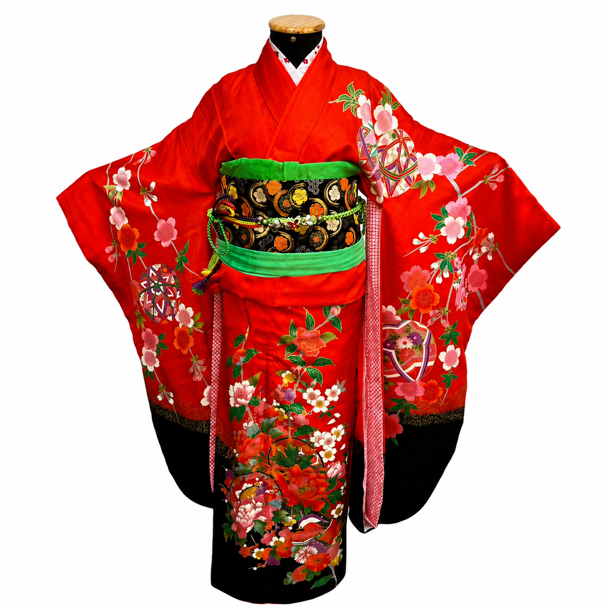

Masculino · Adulto
Tradição japonesa · Atendimento personalizado
A beleza da tradição em momentos inesquecíveis.
Kimonos selecionados para cerimônias, celebrações e ensaios fotográficos — com orientação cuidadosa para você encontrar a peça ideal.
AutenticidadePeças tradicionais
CuidadoEm cada detalhe
ExclusividadePara a sua ocasião

tradição
Elegância que atravessa gerações
Nossa essência
Mais que uma veste,
uma história para recordar.
Na Kimonos Watanabe, cada peça carrega a elegância e a autenticidade da cultura japonesa.
Trabalhamos com aluguel de kimonos femininos, masculinos e infantis, cuidadosamente escolhidos para transformar ocasiões especiais em experiências memoráveis.
Do primeiro contato à escolha dos acessórios, oferecemos um atendimento próximo para que cada detalhe esteja em harmonia com o seu momento.

Seleção especial
Conheça nossa coleção
Masculino · Adulto
Kimono formal para casamento
Traje tradicional sofisticado para casamentos e cerimônias.Consultar este modelo →Feminino · Infantil
Kimono formal — 3 anos
Delicado e tradicional para cerimônias e ensaios fotográficos.Consultar este modelo →Feminino · Infantil
Kimono formal — 7 anos
Uma peça marcante para celebrações e ocasiões especiais.Consultar este modelo →Feminino · Nacional
Kimono de tecido nacional
Leveza, conforto e elegância para diferentes celebrações.Consultar este modelo →Masculino · Infantil
Kimono formal — 5 anos
Visual refinado para cerimônias, eventos e sessões de fotos.Consultar este modelo →Uma experiência completa
O detalhe certo transforma todo o conjunto.
Conte com a nossa orientação para combinar o kimono aos acessórios ideais. Temos opções a partir de R$ 75.
Conhecer acessórios ↗Pronta para escolher?
Encontre o kimono ideal
para o seu momento.
Consulte modelos, tamanhos, valores e datas diretamente pelo WhatsApp.
Conversar com a Kimonos Watanabe ↗